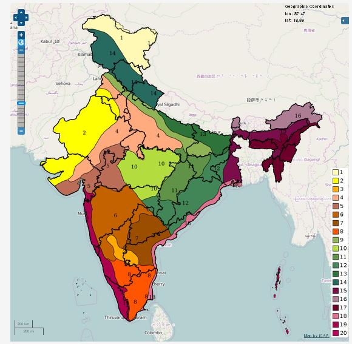

Weather Information
Weather Information
This topic provides information about the agro climatic zones of India
This page provides information about the real time weather forecast information available in the country.
Weather based Agro advisories offered by various institutions across India are covered here
Agro Climatic Zones
In order to maximize the production from the available resources and prevailing climatic conditions, need-based, location specific technology needs to be generated. Delineation of agro-climatic zones based on soil, water, rainfall, temperature etc. is the first essential step for sustainable production.
What is Agro climatic zone
An “Agro-climatic zone” is a land unit in terms of major climates, suitable for a certain range of crops and cultivars. The planning aims at scientific management of regional resources to meet the food, fiber, fodder and fuel wood without adversely affecting the status of natural resources and environment. Crop yield is (FAO, 1983). Agro-climatic conditions mainly refer to soil types, rainfall, temperature and water availability which influence the type of vegetations. An agro-ecological zone is the land unit carved out of agro-climatic zone superimposed on landform which acts as modifier to climate and length of growing period.
Planning of Agro climatic zones of India
With the 329 million hectares of the geographical area the country presents a large number of complex agro-climatic situations.
Several attempts have been made to delineate major agro-ecological regions in respect to soils, climate, physiographic and natural vegetation for macro-level planning on a more scientific basis. They are as follows.
- Agro-climatic regions by the Planning Commission
- Agro-climatic zones under National Agricultural Research Project (NARP)
- Agro-ecological regions by the National Bureau of Soil Survey & Land Use Planning (NBSS & LUP)
Agro-climatic regions by the Planning Commission
The Planning Commission, as a result of the mid-term appraisal of the planning targets of the Seventh Plan, has divided the country into fifteen broad agro-climatic zones based on physiography, soils, geological formation, Climate, cropping patterns, and development of irrigation and mineral resources for broad agricultural planning and developing future strategies. Fourteen regions were in the main land and the remaining one in the islands of Bay of Bengal and the Arabian Sea. The main objective was to integrate plans of the agro-climatic regions with the state and national plans to enable policy development based on techno-agro-climatic considerations. In the agro-climatic regional planning, further sub-regionalization was possible based on agro-ecological parameters.
Agro-climatic zones under National Agricultural Research Project (NARP)
National Agricultural Research Project (NARP) was launched by ICAR for initiating agricultural research in the agro-climatic zones of the country. The objective was to set up or upgrade a zonal research station in each agro-climatic zone for generating location specific, need based research targeted for specific agro-ecological situations. The focus was on analyzing agro-ecological conditions and cropping patterns and come out with a programme directly targeted to solve the major bottle necks of agricultural growth in a zone based on natural resources, major crops, farming systems, production constraints and socio-economic conditions prevalent in that zone. Stress was on technology generation. In NARP, the country was divided into 127 agro-climatic zones.
For the names of different Agroclimatic Zones of the Country, click here.
Agro-ecological regions by the National Bureau of Soil Survey & Land Use Planning (NBSS & LUP)
The National Bureau of Soil Survey & Land Use Planning (NBSS&LUP) came up with twenty agro-ecological zones based on the growing period as an integrated criteria of effective rainfall, soil groups, delineated boundaries adjusted to district boundaries with a minimal number of regions. Subsequently, these twenty agro-ecological zones were sub- divided into 60 sub-zones.

- Western Himalayas
- Western Plain, Kachchh, and part of Kathiwara Peninsula
- Deccan Plateau
- Northern Plain and Central Highlands including Aravallis
- Central Malwa Highlands, Gujarat Plains, and Kathiawar Peninsula
- Deccan Plateau, hot semi-arid ecoregion
- Deccan (Telengana) Plateau and Eastern Ghats
- Eastern Ghats, Tamil Nadu Plateau and Deccan (Karnataka)
- Northern Plain, hot sub-humid (dry) ecoregion
- Central Highlands (Malwas, Budelkhand, and Eastern Satpura)
- Eastern Plateau (Chattisgarh), hot sub-humid ecoregion
- Eastern (Chotanagpur) Plateau and Eastern Ghats
- Eastern Plain
- Western Himalayas
- Bengal and Assam plains
- Eastern Himalayas
- North Eastern Hills (Purvanchal)
- Eastern Coastal Plain
- Western Ghats and Coastal Plain
- Island of Andaman Nicobar and Lakshadweep
For more details, click here.
Real-time Weather Forecast
Real time availability of weather information by IMD
To access the realtime data, click here.
Real Time Weather Forecasting by C-DAC
Real Time Weather Forecasting is very important for weather scientists, operational meteorologists, and aviation/ transport industry as well as policy makers. The Computational Earth Science (CES) group of Centre for Development of Advanced Computing (C-DAC) has developed an automated workflow for real time weather simulations: “Anuman” using Weather Research and Forecast (WRF) model of National Centre of Atmospheric Research (NCAR), USA. This tool provides high-resolution weather simulations and number of different weather forecast products useful as a decision support for various user communities.
Salient features of Anuman
- End-to-end forecasting system
- Timely generation of important weather forecast products for many applications "On-Demand"
- Local-area, short-term, model based weather forecasting customized by location, application and dissemination
- Current forecasts available for several different states/village areas
- Capability of creating forecast products up to 4 km resolution
- The location specific real time weather forecasts are useful for the decision making in terms of weather conditions over a particular area.
- The WRF outputs would be useful as an input for hydrology models
Weather forecast
To access the hourly weather information for 72 hours lead time, click on the following image.

Anuman now on mobile
Anuman now offers the latest weather updates on mobile. It provides hour to hour weather forecast over 50000 locations all over India using high resolution weather model output, generated using C-DAC’s National PARAM Supercomputer.
Features:
- High resolution weather forecast model simulations on ~1024 cores of PARAM Yuva-II.
- Daily forecast for next 3 days on single click.
- Provides accurate hourly forecast including: Maximum Temperature, Minimum Temperature, Relative Humidity, Sea Level Pressure, Probability of Rainfall, Cloud condition, Wind Speed and Direction for a specific location.
- Supports Geo-Positioning, retrieving the latest weather conditions for current location.
- Multiple locations management to facilitate user while travelling across the India.
- Attractive and illustrative graphics indicating different time and weather conditions.
- Useful for Farmers, Fishermen, Travel agencies, News agencies, Businessmen, Environment agencies, Industries (e.g., Agriculture, wind energy, environment), Academicians, Researchers, and common man for day to day activities.
- Simple and Easy to use.
- Available Free of Cost.
- The mobile based forecasts can be customized to user locations and different parameters.
To download the widget, click here.
Source: CES Group, C-DAC
weather based agro advices
Weather warnings issued by National Disaster Management Authority (NDMA), Government of India
To access the weather warnings issued by the National Disaster Management Authority (NDMA), Government of India, click here.
Crop Weather Outlook
Indian farming community is in great need to have access to weather information to plan and manage their crops and their livelihoods. Considering the growing acceptance of farmers for the internet and mobile based services, ICAR made an attempt to provide valuable agromet information to the users through a common platform - 'Crop Weather Outlook'. This website provides Agrometeorological information highlights generated under the All India Coordinated Research Project on Agrometeorology (AICRPAM) and its Cooperating and Collaborating Centres along with ‘Value Added Agro-advisory Reports.This website not only provides information on the research activities of the Agromet Centres located at various State Agricultural Universities but also provides linkages to other associated Web sites where information of agrometeorological relevance is located so that the viewer has access to all related information of his needs. Central Research Institute for Dryland Agriculture (CRIDA), Hyderabad is operating this website. Key information available from this site are -
Advisories & Forecasts from Indian Meteorological Department
The Agricultural Meteorology Division of IMD was established at Pune in 1932 and from its inception the Division supports and participates in multi-disciplinary activities in this field. It is also the centre for research programmes in agricultural meteorology and has field units in various parts of the country. Besides, forecasts and advisories for farmers are issued by IMD’s Forecasting Offices located at different State capitals.
- District-wise Advisories for farmers
- State-wise Advisories for farmers
- District level Weather Forecast
- Regional Weather Forecast
- All India Weather Forecast
- SMS Advisory for farmers
- Alerts / warnings
Advisories from State Agricultural Universities
National Initiative on Climate Resilient Agriculture (NICRA)
National Initiative on Climate Resilient Agriculture (NICRA) is a network project of the Indian Council of Agricultural Research (ICAR) launched in February, 2011. The project aims to enhance resilience of Indian agriculture to climate change and climate vulnerability through strategic research and technology demonstration. The research on adaptation and mitigation covers crops, livestock, fisheries and natural resource management. The project consists of four components viz. Strategic Research, Technology Demonstration, Capacity Building and Sponsored/Competitive Grants. The project was formally launched on 2nd February 2011.
- For more details visit NICRA website